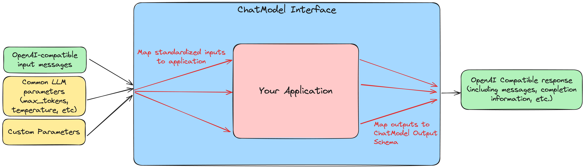

Tutorial: Getting Started with ChatModel
MLflow’s ChatModel class provides a standardized way to create production-ready conversational AI models. The resulting models are fully integrated with MLflow’s tracking, evaluation, and lifecycle management capabilities. They can be shared with others in the MLflow Model Registry, deployed as a REST API, or loaded in a notebook for interactive use. Furthermore, they are compatible with the widely-adopted OpenAI chat API spec, making them easy to integrate with other AI systems and tools.
If you’re already familiar with PythonModel, you might wonder why ChatModel is needed. As GenAI applications grow more complex, mapping inputs, outputs, and parameters with a custom PythonModel can be challenging. ChatModel simplifies this by offering a structured, OpenAI-compatible schema for conversational AI models.
ChatModel |
PythonModel |
|
|---|---|---|
When to use |
Use when you want to develop and deploy a conversational model with standard chat schema compatible with OpenAI spec. |
Use when you want full control over the model’s interface or customize every aspect of your model’s behavior. |
Interface |
Fixed to OpenAI’s chat schema. |
Full control over the model’s input and output schema. |
Setup |
Quick. Works out of the box for conversational applications, with pre-defined model signature and input example. |
Custom. You need to define model signature or input example yourself. |
Complexity |
Low. Standardized interface simplified model deployment and integration. |
High. Deploying and integrating the custom PythonModel may not be straightforward. E.g., The model needs to handle Pandas DataFrames as MLflow converts input data to DataFrames before passing it to PythonModel. |
What You’ll Learn
This guide will take you through the basics of using the ChatModel API to define custom conversational AI models. In particular, you will learn:
How to map your application logic to the
ChatModel’s input/output schemaHow to use the pre-defined inference parameters supported by ChatModels
How to pass custom parameters to a ChatModel using
custom_inputsHow
ChatModelcompares toPythonModelfor defining custom chat models
To illustrate these points, this guide will walk you through building a custom ChatModel, using a locally-hosted Ollama model as our example. There is no built-in Ollama model flavor, so creating a custom ChatModel provides a way to use MLflow’s extensive tracking, evaluation, and lifecycle management capabilities with Ollama models.
Prerequisites
Familiarity with MLflow logging APIs and GenAI concepts.
MLflow version 2.17.0 or higher installed for use of
ChatModel.
Understanding ChatModel: Input/Output Mapping
The mlflow.pyfunc.ChatModel interface sits between your application and MLflow’s ecosystem, providing a layer of standardization that makes it easier to integrate your application with MLflow’s other features and to deploy your model in an accessible, production-ready format.
To that end, when defining a custom ChatModel, the key task is to map your application’s logic to the ChatModel’s standardized interface. This mapping exercise is the fundamental part of creating a custom ChatModel.

When using a custom ChatModel, the predict method expects standardized inputs that look like this:
input = {
"messages": [{"role": "user", "content": "What is MLflow?"}],
"max_tokens": 25,
}
with a messages key containing a list of messages, and optional inference parameters such as max_tokens, temperature, top_p, and stop. You can find details of the full chat request object here.
The output is also returned in a standardized format that looks like this:
{
"choices": [
{
"index": 0,
"message": {
"role": "assistant",
"content": "MLflow is an open-source platform for machine learning (ML) and artificial intelligence (AI). It's designed to manage,",
},
"finish_reason": "stop",
}
],
"model": "llama3.2:1b",
"object": "chat.completion",
"created": 1729190863,
}
You can find details of the full chat response object here.
These input/output schemas are compatible with the widely-adopted OpenAI spec, making ChatModel s easy to use in a wide variety of contexts.
To demonstrate this mapping process, we will show how to use the mlflow.pyfunc.ChatModel class to log Meta’s Llama 3.2 1B model via the Ollama llm client, which does not have a native MLflow flavor.
Building Your First ChatModel
In this section, we will wrap a locally-hosted Ollama model with the ChatModel interface. We will build a simplified version showing how to handle inputs and outputs, and then we will show how to handle inference parameters such as max_tokens and temperature.
Setup: Install Ollama and download the model
Install Ollama from here.
Once Ollama is installed and running, download the Llama 3.2 1B model by running
ollama pull llama3.2:1b
You can validate that the model is downloaded and available on your system with ollama run llama3.2:1b.
> ollama run llama3.2:1b
>>> Hello world!
Hello! It's great to see you're starting the day with a cheerful greeting. How can I assist you today?
>>> Send a message (/? for help)
We will use the ollama-python library to interface with the Ollama model. Install it to your Python environment with pip install ollama. Also, install mlflow with pip install mlflow.
Using the Ollama Python library
In order to map the Ollama input/output schema to the ChatModel input/output schema, we first need to understand what kinds of inputs and outputs the Ollama model expects and returns. Here’s how to query the model with a simple prompt:
import ollama
from ollama import Options
from rich import print
response = ollama.chat(
model="llama3.2:1b",
messages=[
{
"role": "user",
"content": "What is MLflow Tracking?",
}
],
options=Options({"num_predict": 25}),
)
print(response)
Which returns the following output:
{
'model': 'llama3.2:1b',
'created_at': '2024-11-04T12:47:53.075714Z',
'message': {
'role': 'assistant',
'content': 'MLflow Tracking is an open-source platform for managing, monitoring, and deploying machine learning (ML) models. It provides a'
},
'done_reason': 'length',
'done': True,
'total_duration': 1201354125,
'load_duration': 819609167,
'prompt_eval_count': 31,
'prompt_eval_duration': 41812000,
'eval_count': 25,
'eval_duration': 337872000
}
Here are a few things to note about the Ollama inputs and outputs:
The
messagesargument expected by theollama.chatmethod is a list of dictionaries withroleandcontentkeys. We will need to convert the list ofChatMessageobjects expected by the ChatModel API to a list of dictionaries.Inference parameters are passed to Ollama via the
optionsargument, which is a dictionary of parameters. Furthermore, as we can see based onnum_predict, the parameter names are different from those expected by ChatModel. We will need to map the ChatModel inference parameters to the Ollama options.The output is structured differently from the
ChatModeloutput schema. We will need to map this to the ChatModel output schema.
Ollama ChatModel Version 1: Chat only
Let’s start with a simple version of a custom ChatModel that handles inputs/output messages but does not yet handle inference parameters. To accomplish this, we need to:
Define a class that extends
mlflow.pyfunc.ChatModelImplement the
load_contextmethod, which will handle the initialization of the Ollama clientImplement the
predictmethod, which will handle the input/output mapping
Most of the customization, at least in this simple version, will occur in the predict method. When implementing the predict method, we make use of the following standardized inputs:
messages: a list ofChatMessageobjectsparams: aChatParamsobject, which contains the inference parameters
And we need to return a ChatCompletionResponse object, which is a dataclass made up of a list of ChatChoice objects, along with (optional) usage data and other metadata.
These are what we must map to the Ollama inputs and outputs. Here’s a simplified version that, for now, only handles the input/output messages:
# if you are using a jupyter notebook
# %%writefile ollama_model.py
from mlflow.pyfunc import ChatModel
from mlflow.types.llm import ChatMessage, ChatCompletionResponse, ChatChoice
from mlflow.models import set_model
import ollama
class SimpleOllamaModel(ChatModel):
def __init__(self):
self.model_name = "llama3.2:1b"
self.client = None
def load_context(self, context):
self.client = ollama.Client()
def predict(self, context, messages, params=None):
# Prepare the messages for Ollama
ollama_messages = [msg.to_dict() for msg in messages]
# Call Ollama
response = self.client.chat(model=self.model_name, messages=ollama_messages)
# Prepare and return the ChatCompletionResponse
return ChatCompletionResponse(
choices=[{"index": 0, "message": response["message"]}],
model=self.model_name,
)
set_model(SimpleOllamaModel())
In the above code, we mapped the ChatModel inputs to the Ollama inputs, and the Ollama output back to the ChatModel output schema. More specifically:
The
messageskey in theChatModelinput schema is a list ofChatMessageobjects. We converted this to a list of dictionaries withroleandcontentkeys, which is the expected input format for Ollama.The
ChatCompletionResponsethat thepredictmethod returns must be created using theChatCompletionResponsedataclass, but the nested message and choice data can be provided as dictionaries that match the expected schema. MLflow will automatically convert these dictionaries to the appropriate dataclass objects. In our case, we created aChatCompletionResponsebut provided the choices and messages as dictionaries.
In a notebook environment, we can save the model to a file called ollama_model.py with the %%writefile magic command and call set_model(SimpleOllamaModel()). This is the “models from code” approach to model logging, which you can read more about here.
Now we can log this model to MLflow as follows, passing the path to the file containing the model definition we just created:
import mlflow
mlflow.set_experiment("chatmodel-quickstart")
code_path = "ollama_model.py"
with mlflow.start_run():
model_info = mlflow.pyfunc.log_model(
"ollama_model",
python_model=code_path,
input_example={
"messages": [{"role": "user", "content": "Hello, how are you?"}]
},
)
Again, we used the models-from-code approach to log the model, so we passed the path to the file containing our model definition to the python_model parameter. Now we can load the model and try it out:
loaded_model = mlflow.pyfunc.load_model(model_info.model_uri)
result = loaded_model.predict(
data={
"messages": [{"role": "user", "content": "What is MLflow?"}],
"max_tokens": 25,
}
)
print(result)
{
"choices": [
{
"index": 0,
"message": {
"role": "assistant",
"content": "MLflow is an open-source platform for model deployment, monitoring, and tracking. It was created by Databricks, a cloud-based data analytics company, in collaboration with The Data Science Experience (TDEE), a non-profit organization that focuses on providing high-quality, free machine learning resources.\n\nMLflow allows users to build, train, and deploy machine learning models in various frameworks, such as TensorFlow, PyTorch, and scikit-learn. It provides a unified platform for model development, deployment, and tracking across different environments, including local machines, cloud platforms (e.g., AWS), and edge devices.\n\nSome key features of MLflow include:\n\n1. **Model versioning**: Each time a model is trained or deployed, it generates a unique version number. This allows users to track changes, identify conflicts, and manage multiple versions.\n2. **Model deployment**: MLflow provides tools for deploying models in various environments, including Docker containers, Kubernetes, and cloud platforms (e.g., AWS).\n3. **Monitoring and logging**: The platform includes built-in monitoring and logging capabilities to track model performance, errors, and other metrics.\n4. **Integration with popular frameworks**: MLflow integrates with popular machine learning frameworks, making it easy to incorporate the platform into existing workflows.\n5. **Collaboration and sharing**: MLflow allows multiple users to collaborate on models and tracks changes in real-time.\n\nMLflow has several benefits, including:\n\n1. **Improved model management**: The platform provides a centralized view of all models, allowing for better model tracking and management.\n2. **Increased collaboration**: MLflow enables team members to work together on machine learning projects more effectively.\n3. **Better model performance monitoring**: The platform offers real-time insights into model performance, helping users identify issues quickly.\n4. **Simplified model deployment**: MLflow makes it easy to deploy models in various environments, reducing the complexity of model deployment.\n\nOverall, MLflow is a powerful tool for managing and deploying machine learning models, providing a comprehensive platform for model development, tracking, and collaboration.",
},
"finish_reason": "stop",
}
],
"model": "llama3.2:1b",
"object": "chat.completion",
"created": 1730739510,
}
Now we have received a chat response in a standardized, OpenAI-compatible format. But something is wrong: even though we set max_tokens to 25, the response is well over 25 tokens! Why is this?
We have not yet handled the inference parameters in our custom ChatModel: in addition to mapping the input/output messages between the ChatModel and Ollama formats, we also need to map the inference parameters between the two formats. We will address this in the next version of our custom ChatModel.
Building a ChatModel that Accepts Inference Parameters
Most LLMs support inference parameters that control how the response is generated, such as max_tokens, which limits the number of tokens in the response, or temperature, which adjusts the “creativity” of the response. The ChatModel API includes built-in support for many of the most commonly-used inference parameters, and we will see how to configure and use them in this section.
Passing Parameters to a ChatModel
When using a ChatModel, parameters are passed alongside messages in the input:
result = model.predict(
{
"messages": [{"role": "user", "content": "Write a story"}],
"max_tokens": 100,
"temperature": 0.7,
}
)
You can find the full list of supported parameters here. Furthermore, you can pass arbitrary additional parameters to a ChatModel via the custom_inputs key in the input, which we will cover in more detail in the next section.
Comparison to Parameter Handling in Custom PyFunc Models
If you’re familiar with configuring inference parameters for PyFunc models, you will notice some key differneces in how ChatModel handles parameters:
ChatModel |
PyFunc |
|---|---|
Parameters are part of the |
Parameters are passed to |
Commonly-used chat model parameters (e.g. |
Parameters are chosen and configured by the developer |
Model signature is automatically configured to support the common chat model parameters |
Parameters must be explicitly defined in the model signature |
In short, ChatModels make it easy to configure and use inference parameters, while also providing a standardized, OpenAI-compatible output format, but at the cost of some flexibility.
Now, let’s configure our custom ChatModel to handle inference parameters.
Ollama ChatModel Version 2: Chat with inference parameters
Setting up a ChatModel with inference parameters is straightforward: just like with the input messages, we need to map the inference parameters to the format expected by the Ollama client. In the Ollama client, inference parameters are passed to the model as an options dictionary. When defining our custom ChatModel, we can access the inference parameters passed to predict via the params keyword argument. Our job is to map the predict method’s params dictionary to the Ollama client’s options dictionary. You can find the list of options supported by Ollama here.
# if you are using a jupyter notebook
# %%writefile ollama_model.py
import mlflow
from mlflow.pyfunc import ChatModel
from mlflow.types.llm import ChatMessage, ChatCompletionResponse, ChatChoice
from mlflow.models import set_model
import ollama
from ollama import Options
class OllamaModelWithMetadata(ChatModel):
def __init__(self):
self.model_name = None
self.client = None
def load_context(self, context):
self.model_name = "llama3.2:1b"
self.client = ollama.Client()
def _prepare_options(self, params):
# Prepare options from params
options = {}
if params:
if params.max_tokens is not None:
options["num_predict"] = params.max_tokens
if params.temperature is not None:
options["temperature"] = params.temperature
if params.top_p is not None:
options["top_p"] = params.top_p
if params.stop is not None:
options["stop"] = params.stop
if params.custom_inputs is not None:
options["seed"] = int(params.custom_inputs.get("seed", None))
return Options(options)
def predict(self, context, messages, params=None):
ollama_messages = [
{"role": msg.role, "content": msg.content} for msg in messages
]
options = self._prepare_options(params)
# Call Ollama
response = self.client.chat(
model=self.model_name, messages=ollama_messages, options=options
)
# Prepare the ChatCompletionResponse
return ChatCompletionResponse(
choices=[{"index": 0, "message": response["message"]}],
model=self.model_name,
)
set_model(OllamaModelWithMetadata())
Here’s what we changed from the previous version:
We mapped
max_tokens,temperature,top_p, andstopfrom theparamsdictionary tonum_predict,temperature,top_p, andstopin the Ollama client’soptionsdictionary (note the different parameter name formax_tokensexpected by Ollama)We passed the
optionsdictionary to the Ollama client’schatmethod. Note that we created a new private method,_prepare_options, to handle the mapping fromparamstooptions. Additional methods can be added to a customChatModelto keep code clean and organized while handling custom logic.We checked the
custom_inputskey in theparamsdictionary for aseedvalue—we’ll cover this in more detail in the next section.
Now we can log this model to MLflow, load it, and try it out in the same way as before:
code_path = "ollama_model.py"
with mlflow.start_run():
model_info = mlflow.pyfunc.log_model(
"ollama_model",
python_model=code_path,
input_example={
"messages": [{"role": "user", "content": "Hello, how are you?"}]
},
)
loaded_model = mlflow.pyfunc.load_model(model_info.model_uri)
result = loaded_model.predict(
data={
"messages": [{"role": "user", "content": "What is MLflow?"}],
"max_tokens": 25,
}
)
print(result)
Which returns:
{
"choices": [
{
"index": 0,
"message": {
"role": "assistant",
"content": "MLflow is an open-source platform that provides a set of tools for managing and tracking machine learning (ML) model deployments,",
},
"finish_reason": "stop",
}
],
"model": "llama3.2:1b",
"object": "chat.completion",
"created": 1730724514,
}
Now that we have appropriately mapped max_tokens from the ChatModel input schema to the Ollama client’s num_predict parameter, we receive a response with the expected number of tokens.
Passing Custom Parameters
What if we want to pass a custom parameter that is not included in the list of built-in inference parameters? The ChatModel API provides a way to do this via the custom_inputs key, which accepts a dictionary of key-value pairs that are passed through to the model as-is. Both the keys and values must be strings, so it might be necessary to handle type conversions in the predict method. In the above example, we configured the Ollama model to use a custom seed value by adding a seed key to the custom_inputs dictionary:
if params.custom_inputs is not None:
options["seed"] = int(params.custom_inputs.get("seed", None))
Because we included this, we can now pass a seed value via the custom_inputs key in the predict method. If you call predict multiple times with the same seed value, you will always receive the same response.
result = loaded_model.predict(
data={
"messages": [{"role": "user", "content": "What is MLflow?"}],
"max_tokens": 25,
"custom_inputs": {"seed": "321"},
}
)
print(result)
Which returns:
{
"choices": [
{
"index": 0,
"message": {
"role": "assistant",
"content": "MLflow is an open-source software framework used for machine learning model management, monitoring, and deployment. It's designed to provide",
},
"finish_reason": "stop",
}
],
"model": "llama3.2:1b",
"object": "chat.completion",
"created": 1730724533,
}
Tip
Using vs. Defining ChatModels
There’s an important distinction between how you pass data when using a ChatModel versus how you access that data when defining one.
When using an instantiated ChatModel, all the arguments—messages, parameters, etc.—are passed to the predict method as a single dictionary.
model.predict({"messages": [{"role": "user", "content": "Hello"}], "temperature": 0.7})
When defining the custom ChatModel’s predict method, on the other hand, we access the data through separate messages and params arguments, where messages is a list of ChatMessage objects and params is a ChatParams object. Understanding this distinction—unified input for users, structured access for developers—is important to working effectively with ChatModels.
Comparison to PyFunc
To illustrate some of the benefits and trade-offs of setting up a chat model via the ChatModel API vs. the PythonModel API, let’s see what the above model would look like if we implemented it as a PythonModel.
Ollama Model Version 3: Custom PyFunc Model
# if you are using a jupyter notebook
# %%writefile ollama_pyfunc_model.py
import mlflow
from mlflow.pyfunc import PythonModel
from mlflow.types.llm import (
ChatCompletionRequest,
ChatCompletionResponse,
ChatMessage,
ChatChoice,
)
from mlflow.models import set_model
import ollama
from ollama import Options
import pandas as pd
from typing import List, Dict
class OllamaPyfunc(PythonModel):
def __init__(self):
self.model_name = None
self.client = None
def load_context(self, context):
self.model_name = "llama3.2:1b"
self.client = ollama.Client()
def _prepare_options(self, params):
options = {}
if params:
if "max_tokens" in params:
options["num_predict"] = params["max_tokens"]
if "temperature" in params:
options["temperature"] = params["temperature"]
if "top_p" in params:
options["top_p"] = params["top_p"]
if "stop" in params:
options["stop"] = params["stop"]
if "seed" in params:
options["seed"] = params["seed"]
return Options(options)
def predict(self, context, model_input, params=None):
if isinstance(model_input, (pd.DataFrame, pd.Series)):
messages = model_input.to_dict(orient="records")[0]["messages"]
else:
messages = model_input.get("messages", [])
options = self._prepare_options(params)
ollama_messages = [
{"role": msg["role"], "content": msg["content"]} for msg in messages
]
response = self.client.chat(
model=self.model_name, messages=ollama_messages, options=options
)
chat_response = ChatCompletionResponse(
choices=[
ChatChoice(
index=0,
message=ChatMessage(
role="assistant", content=response["message"]["content"]
),
)
],
model=self.model_name,
)
return chat_response.to_dict()
set_model(OllamaPyfunc())
This looks quite similar to how we defined our ChatModel above, and you could in fact use this PythonModel to serve the same Ollama model. However, there are some important differences:
We had to handle the input data as a pandas DataFrame, even though the input is ultimately just a list of messages.
Instead of receiving the inference parameters as a pre-configured
ChatParamsobject, receive aparamsdictionary. One consequence of this is that we did not have to treatseedany differently from the other inference parameters: they’re all custom parameters in thePythonModelAPI.We had to call
chat_response.to_dict()to convert theChatCompletionResponseobject to a dictionary rather than aChatCompletionResponseobject. This is handled automatically byChatModel.
Some of the biggest differences come up when it’s time to log the model:
code_path = "ollama_pyfunc_model.py"
params = {
"max_tokens": 25,
"temperature": 0.5,
"top_p": 0.5,
"stop": ["\n"],
"seed": 123,
}
request = {"messages": [{"role": "user", "content": "What is MLflow?"}]}
with mlflow.start_run():
model_info = mlflow.pyfunc.log_model(
"ollama_pyfunc_model",
python_model=code_path,
input_example=(request, params),
)
With a custom PythonModel, we need to manually define the input example so that a model signature can be inferred using the example. This is a significant difference from the ChatModel API, which automatically configures a signature that conforms to the standard OpenAI-compatible input/output/parameter schemas.
To learn more about auto inference of model signature based on an input example, see the GenAI model signature example section for details.
There is also one notable difference in how we call the loaded model’s predict method: parameters are passed as a dictionary via the params keyword argument, rather than in the dictionary containing the messages.
loaded_model = mlflow.pyfunc.load_model(model_info.model_uri)
result = loaded_model.predict(
data={"messages": [{"role": "user", "content": "What is MLflow?"}]},
params={"max_tokens": 25, "seed": 42},
)
print(result)
Which returns:
{
"choices": [
{
"index": 0,
"message": {
"role": "assistant",
"content": "MLflow is an open-source platform for machine learning (ML) and deep learning (DL) model management, monitoring, and",
},
"finish_reason": "stop",
}
],
"model": "llama3.2:1b",
"object": "chat.completion",
"created": 1731000733,
}
In summary, ChatModel provides a more structured approach to defining custom chat models, with a focus on standardized, OpenAI-compatible inputs and outputs. While it requires a bit more setup work to map the input/output schemas between the ChatModel schema and the application it wraps, it can be easier to use than a fully custom PythonModel as it handles the often-challenging task of defining input/output/parameter schemas. The PythonModel approach, on the other hand, provides the most flexibility but requires the developer to manually handle all of the input/output/parameter mapping logic.
Conclusion
In this guide, you have learned:
How to map the input/output schemas between the ChatModel API and your application
How to configure commonly-used chat model inference parameters with the ChatModel API
How to pass custom parameters to a
ChatModelusing thecustom_inputskeyHow
ChatModelcompares to thePythonModelfor defining custom chat models
You should now have a good sense of what the ChatModel API is and how it can be used to define custom chat models.
ChatModel includes some additional functionality that was not covered in this introductory guide, including:
Out of the box support for MLflow Tracing, which is useful for debugging and monitoring your chat models, especially in models with multiple components or calls to LLM APIs.
Support for customizing the model’s configuration using an external configuration file.
To learn more about these and other advanced features of the ChatModel API, you can read this guide.